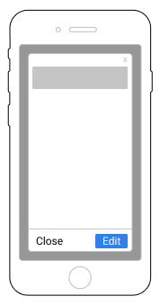
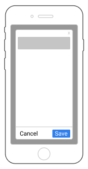
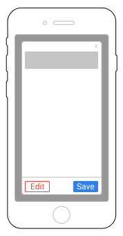

REQUIRES A MAJOR EDIT
Purpose of this presentation
To address the following questions;
- What are the fundamentals building blocks that support User Interfaces in UI Design?
- How can these be put to use buidling a Framework for addressing differing UI challenges, and on different devices?
- What differences are there between what can be done on different devices and what approaches can be employed to address the challenges presented?
1X, 1Y, 1Z
The smallest interface along the X and Y axis (Mobile), plus one level on the Z axis
Create
- Object Title
- Object Content
Read
Update
Delete
Summarise 1X, 1Y, 1Z
- Object with full CRUD cycle
1X, 1Y, 2Z
If the initial screen can be supported in a Modal, the additional functionality can be provided in a Non Modal screen to pair with this.
Non Modal Screen
- Primary Context - System
- Primary Navigation
- Primary Title - Active Nav Link
- Primary Content - Master List
- + Modal Detail Title
- + Modal Detail Content
Modal Pairing
Flip in and out of Modal view to go from Master list to Detail and back
Summarise 1X, 1Y, 2Z
- Modal = Detail Object with full CRUD cycle
- List = Access Multiple Detail Objects
- Nav = Multiple Types of Object
3X, 2Y, 2Z
If the screen is a large Desktop, the UI displayed above can be displayed without the need to use Modals (while still supporting the option)
Desktop - single Context
- Primary Context - System
- Primary Navigation
- Pr'y Title - Active Nav Link
- Pr'y Content - Master List
- + Detail Title
- + Detail Content
- Breadcrumb
Summarise 3X, 2Y, 2Z
- List = Multiple Detail Objects
- Nav = Multiple Types of Object
- Breadcrumb to show where User is on the hierarcy
2X, 2Y, 2Z + Context Banner Reset
When we display content further down the hierarchy we might want to make that very transparent but also to reclaim the space for the UI to provide navigation more specific to the level we are looking at. A Context banner we allow us to do that, communicating the scope employed and letting the User know that everything below (Content & Navigation is relevant to that Context). It also makes more sense to speak the Primary Context as the specific one (as we need to design Mobile first).
Desktop - with Context Banner

- Primary Context
- Primary Navigation
- Primary Title
- Pr'y Content - List
- + Detail Title - Active Nav Link
- + Detail Content - List
- Secondary Context - System
- Secondary Navigation
- Breadcrumb
Summarise 3X, 2Y, 2Z + Context Banner Reset
- List = Multiple Detail Objects
- Nav = Multiple Types of Object
- Breadcrumb to show where User is on the hierarcy
1X, 1Y, 1Z Context Switching
Reset as you step down to different ojects/scoping levels along the hierarchy
1X, 1Y, 1Z Context Switching
A mobile device can only show 1 context at one time and a User is forced to Switch between Contexts using a menu (Hamburger or otherwise)
1X, 1Y, 1Z Context Switching
The menu might remain the same - Centre A switch to Centre B
OR change depending on usage - Data Entry switched to Data Manager
1X, 1Y, 1Z Context Material Layers
Another option is to do as Material design does and employ Material levels at which to reset
1X, 1Y, 1Z Context Switching
- Ability to switch Context in 2 clicks
- OR Ability to step up and down endlessly in 1 clicks (Material Design was a clever paradigm shift)
3X, 2Y, 2Z + Context Banner as Filter set (think Amazon)
A Context banner will allow us to do that, communicating the scope employed and letting the User know that everything below (Content & Navigation is relevant to that Context)
Context as Filter
- Primary Context as a Summary of Filters
- Primary Context filter options
- Primary Context Type
- Primary Content - List based on filter
- Secondary Context - System
- Secondary Navigation
- Breadcrumb
Summarise 3X, 2Y, 2Z + Context Banner as Filter
- List = Filtered Objects
- Filter rather than nav
- Breadcrumb to show where on the hierarcy the filter is applied
Mobile with Context as Filter
Mobile Pattern
- Primary Context
- Primary Navigation
- Primary Title - Active Nav Link
- Primary Content - List
Expand to Desktop 1
- Primary Context
- Primary Navigation
- Primary Title - Active Nav Link
- Primary Content - List
Expand to Desktop 2
- Primary Context
- Primary Navigation
- Primary Title - Active Nav Link
- Primary Content - List
- Detail Title - Active Nav Link
- Detail Content
Relate back to Mobile
- Primary Context
- Primary Navigation
- Primary Title - Active Nav Link
- Primary Content - List
- Detail Title - Active Nav Link
- Detail Content
Expand on Desktop 3
- Primary Context
- Primary Navigation
- Primary Title - Active Nav Link
- Primary Content - List
- Detail Title - Active Nav Link
- Detail Content
- Secondary Navigation
- Secondary Title - Active Nav Link
- Breadcrumb
Expand on Desktop 4
- Primary Context
- Primary Navigation
- Primary Title - Active Nav Link
- Primary Content - List
- Detail Title - Active Nav Link
- Detail Content
- Secondary Navigation
- Secondary Title - Active Nav Link
- Breadcrumb
- Tertiary Context
- Tertiary Navigation - Role
Relate back to Mobile again
- Primary Context
- Primary Navigation
- Primary Title - Active Nav Link
- Primary Content - List
- Detail Title - Active Nav Link
- Detail Content
- Secondary Navigation
- Tertiary Navigation - Role